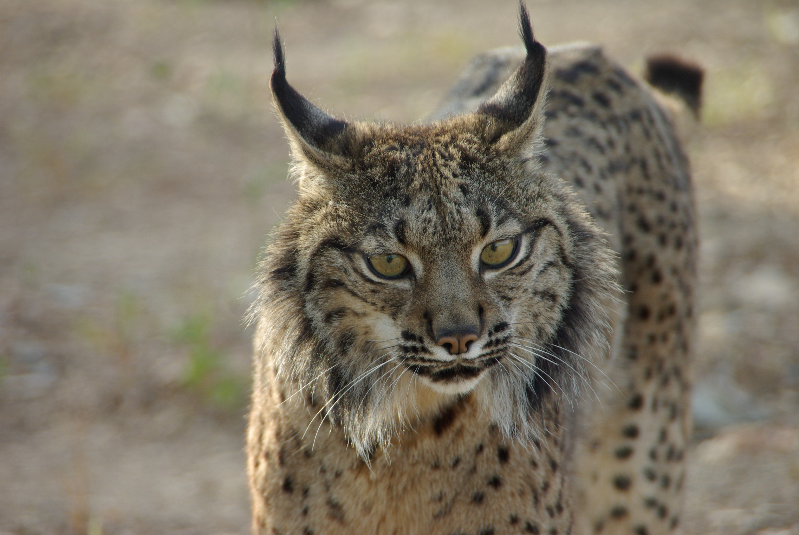
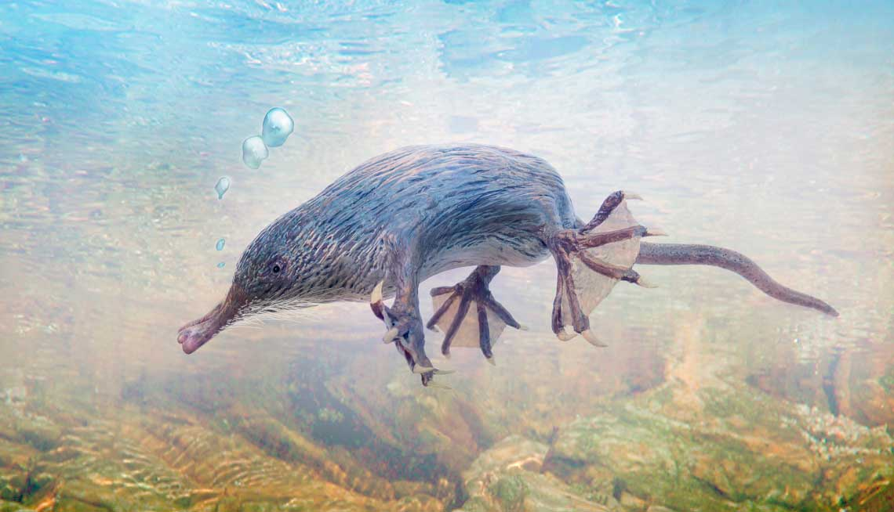
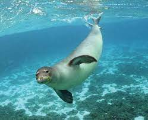
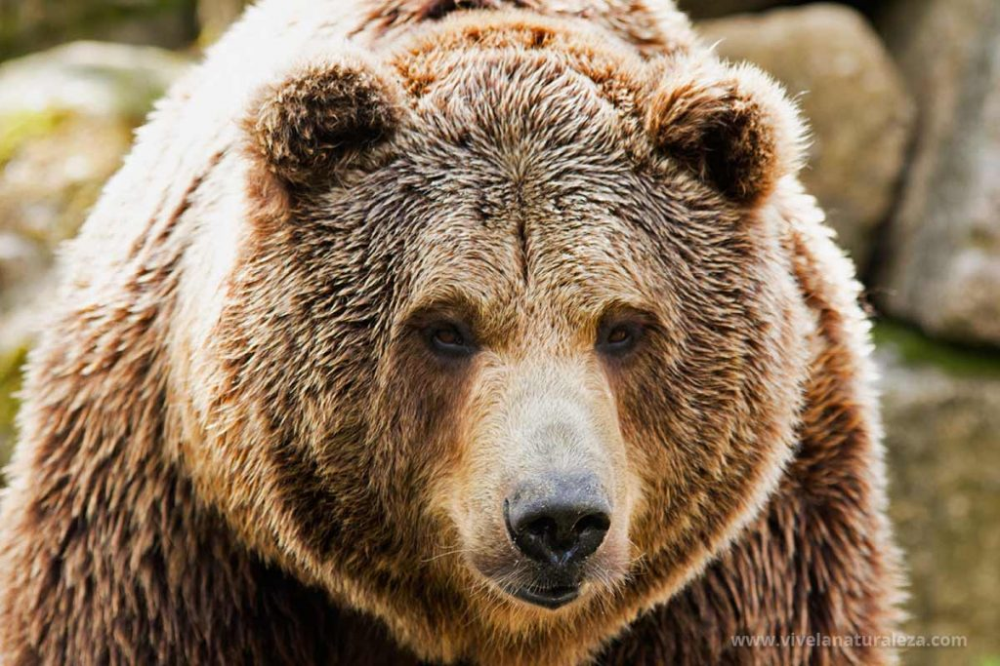

| Información | Imagen | Audio | |
|---|---|---|---|
| Nombre | Datos Curiosos | ||
| Lince Ibérico | Se conocen cuatro especies diferentes, tres de ellas gozan de muy buena salud, mientras que la cuarta es una de las especies más amenazadas en España y en el planeta: el lince ibérico. Se calcula que tan solo quedan 404 ejemplares, una población muy difícil de recuperar debido al deterioro de su hábitat y de su principal base alimenticia, los conejos. |  | |
| Desmán ibérico | este murciélago presenta un dorso gris claro y un vientre casi blanco. Esta especie se encuentra íntimamente ligada a zonas acuáticas de marcado ambiente litoral y su óptimo climático es el clima termomediterráneo. Entre los principales factores que amenazan a su poblaciones se encuentran: Molestias en los refugios por visitas incontroladas. Pérdida de refugios por destrucción directa o bloqueo de las entradas. |  | |
| Foca Monje | Se trata de una de las especies más raras de focas que existen. En otro tiempo fue habitual en los mares Mediterráneo y Negro hasta las costas de Cabo Verde y Canarias. La pesca ilegal, el aumento de la presión humana que desplaza a las focas marinas de su hábitat y la contaminación cada vez mayor en los océanos son los factores de riesgo que provocan que la foca monje sea un mamífero en peligro de extinción. |  | |
| Oso Pardo | El oso pardo ha sido un habitante característico de los bosques maduros de Europa, Asia y América del Norte. A nivel general la especie se encuentra en una situación vulnerable con extinciones parciales en toda su distribución, coincidiendo las zonas más humanizadas con las subespecies en más alto riesgo de extinción.
Causas de que este en peligro de extincion:
|
 | |
| "In nature, nothing exists alone. Everything is connected. Every decision we make has an impact on the world around us." - Jane Goodall | |||
Los animales mamíferos son un grupo diverso de seres vivos que pertenecen al reino Animalia y se caracterizan por ciertas características distintivas. Los mamíferos son vertebrados, lo que significa que tienen una columna vertebral, y se encuentran en una amplia variedad de hábitats en todo el mundo, desde los océanos hasta los desiertos y las selvas tropicales.
Una de las características más distintivas de los mamíferos es que poseen glándulas mamarias, que les permiten producir leche para alimentar a sus crías. Esto es una adaptación única y esencial para el cuidado de los recién nacidos. La leche materna proporciona los nutrientes necesarios y ayuda a fortalecer el sistema inmunológico de los pequeños mamíferos.